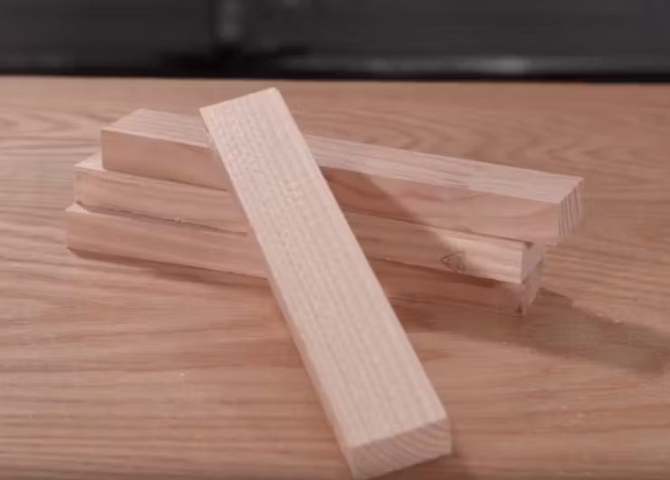
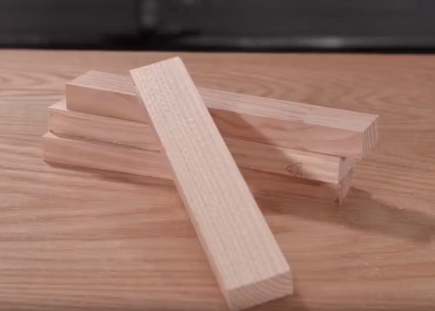

Explore nossa galeria exclusiva e mergulhe no fascinante mundo do Smart Bartender através de imagens que capturam a essência e a magia por trás de cada coquetel. Deixe-se inspirar e descubra a arte única da coquetelaria visualizada em cada foto.
 
